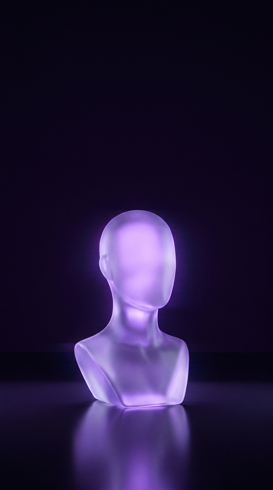
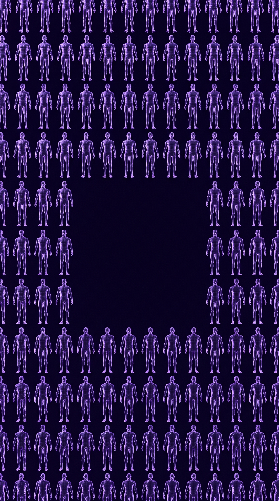
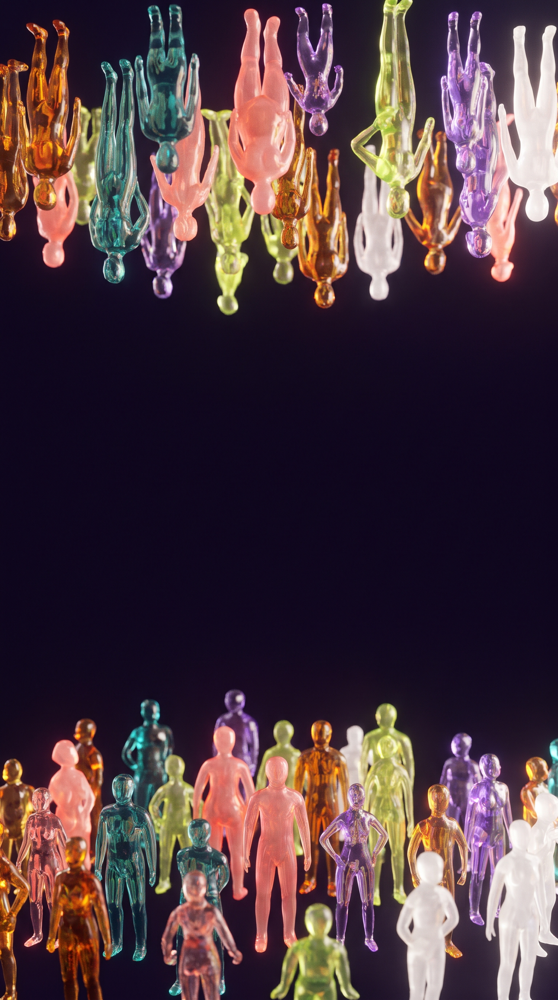
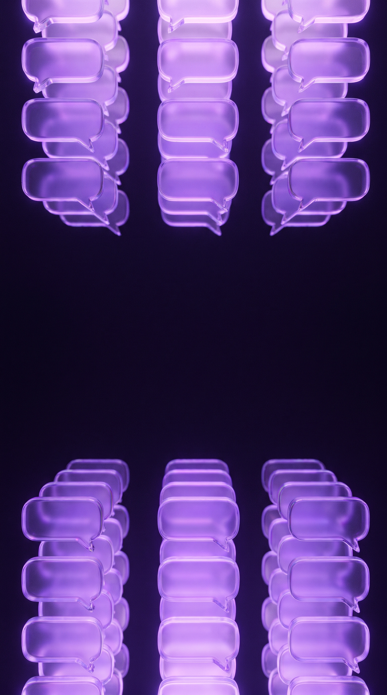

@urlan.design
Usuário sintético
Um perfil criado por IA que responde como se fosse gente
Um estudo comparou 604 pessoas com 120 sintéticos
Nielsen Norman Group · 16 out 2026
Synthetic Users vs. Human Respondents: Same Conclusion, Less Variation
nngroup.com
Gerentes de produto reais
44%
falaram em UX
Gerentes de produto sintéticos
93%
falaram em UX
A IA repete a resposta mais comum e apaga as diferenças
Use pra levantar hipótese.
Não pra decidir.
Não pra decidir.